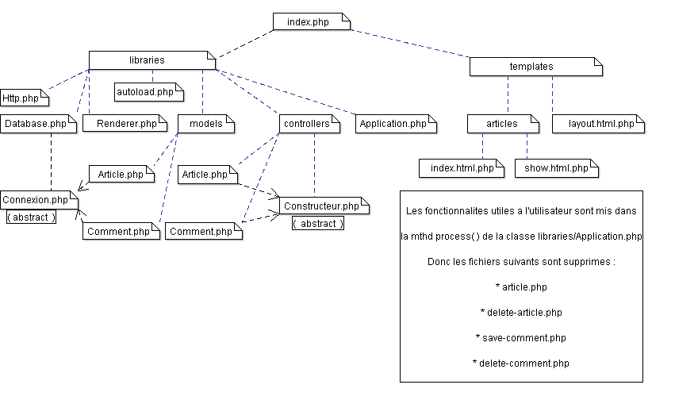

C'est juste un module de presentation. Le projet est telechargeable a l'adresse ci-dessus.
Bug !:
Seul Internet Explorer gere cette page de documentation.
Chrome ne fonctionne pas (pour je sais pas encore quelle raison ?!) .
Le site contient 4 fichiers de base:
- index.php Interraction avec la Base de Donnees. Elle est definie dans le fichier blogpoo.sql
- article.php
- delete-article.php
- delete-comment.php
libraries, et templates.libraries contient:libraries/database.php pour la connexion a la base de donnee.libraries/utils.php , une bibliotheque. On y trouve entre autres, les fonction d'appel aux vues.templates contient les vues suivantes:templates/layout.html.php vue globale{structure) de la page index(son model htm5),templates/articles/index.html.php vue modulaire et iterative. Presentation introductive de chaque article dans la page index ,templates/articles/show.html.php vue (structure) d'un article.
If you would like to edit the color, font, or style of any elements in one of these columns, you would do the following:
body;I'm using six CSS files in this theme.
style.css - Main stylesheet. This file also contains some general styling, such as anchor tag colors, font-sizes, etc.bootstrap.min.css - bootstrap stylesflexslider.css - FlexSlider styles. Used in the blog.owl.carousel.css - own.carousel styles. Used in the Clients block and Features Worksanimate.css - animation stylesprettyPhoto.css - PrettyPhoto style.Mind that these values might be overridden somewhere else in the file.
style.css file contains all of the specific stylings for the page. The file is separated into sections using:
/*-----------------------------------------------------------------------------------*/ /* NAME OF BLOCK /*-----------------------------------------------------------------------------------*/ etc.
If you would like to edit a specific section of the site, simply find the appropriate label in the CSS file, and then scroll down until you find the appropriate style that needs to be edited.
All images are found in the images. If you want to replace the image, just copy the folder with the same name as the original file with identical proportions.
Twelve Javascript files are used in this site.
myscript.js - User configuration file scripts. Most of the animation in this site are carried out from the customs scripts. There are a few functions that you can look at./*-----------------------------------------------------------------------------------*/ /* NAME OF BLOCK /*-----------------------------------------------------------------------------------*/ etc.
blog_post.js - Calls scripts, used on the inside page of postsjquery.flexslider-min.js - FlexSlider script. Used in the home block.jquery.isotope.min.js - Isotop script. Used in the blog.jquery.own.carousel.js - used to scroll the block "command" and Features Works.jquery.prettyPhoto.js - PrettyPhoto script. script allows you to magnify images.animate.js - appearance of the animation function blocks when scrolling website.jquery.BlackAndWhite.js - Apply a black white logo customers.jquery.mb.YTPlayer.js - video player on slides in section home.jquery.min.js - jQuery 1.10.2.jquery.nicescroll.min.js - replacement for the standard to scroll.superfish.min.js - drop-down menu of the second level.